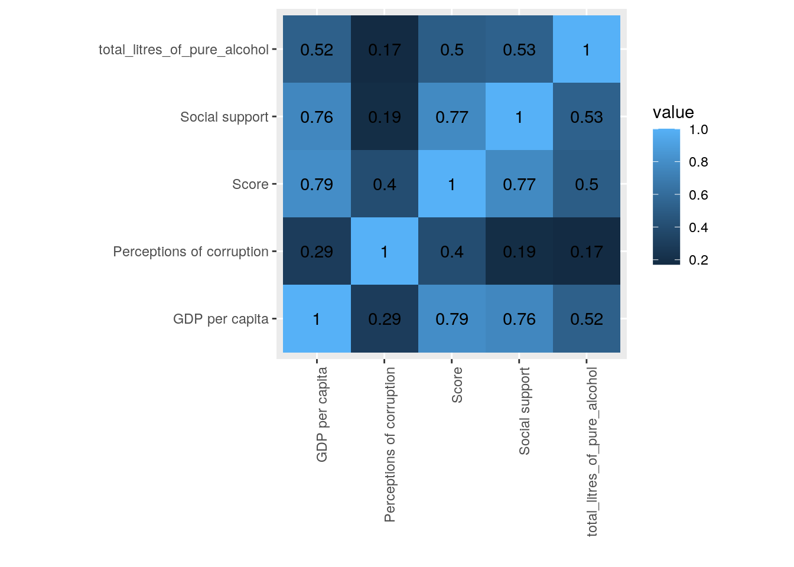
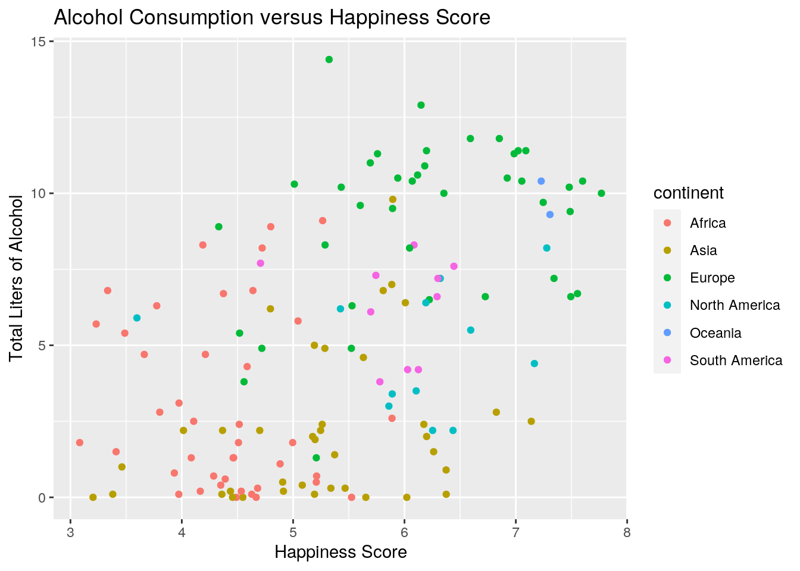
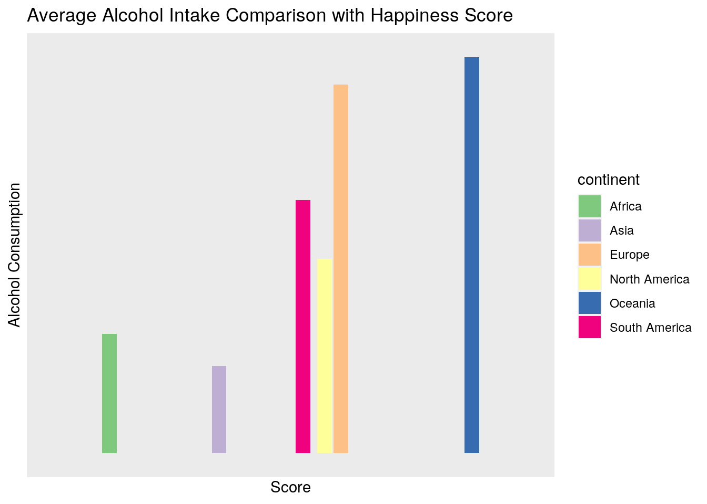
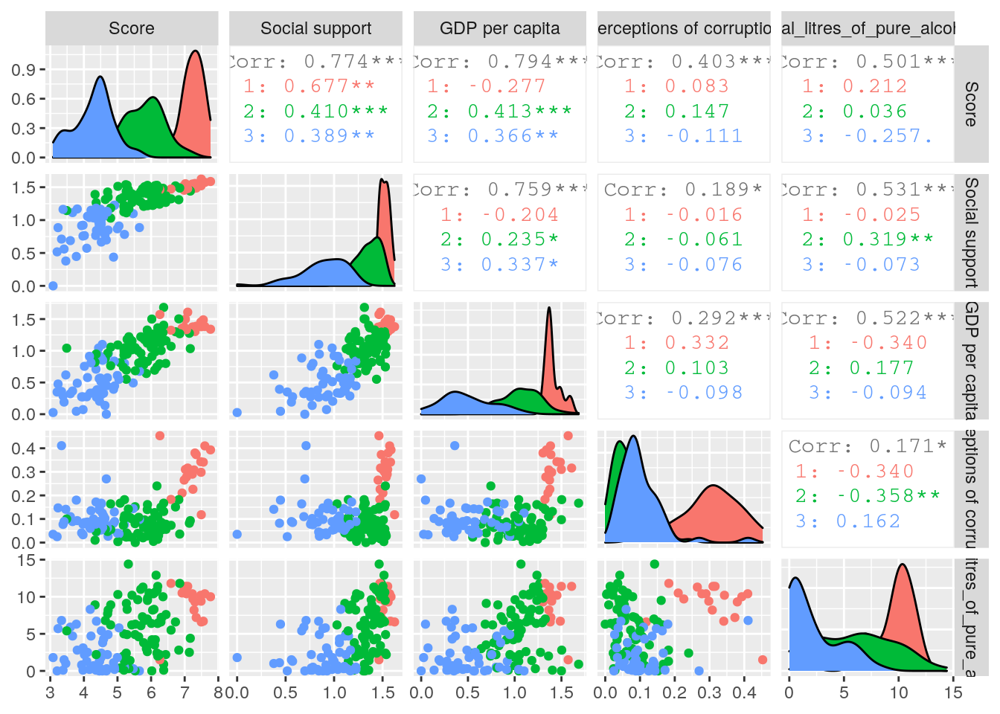
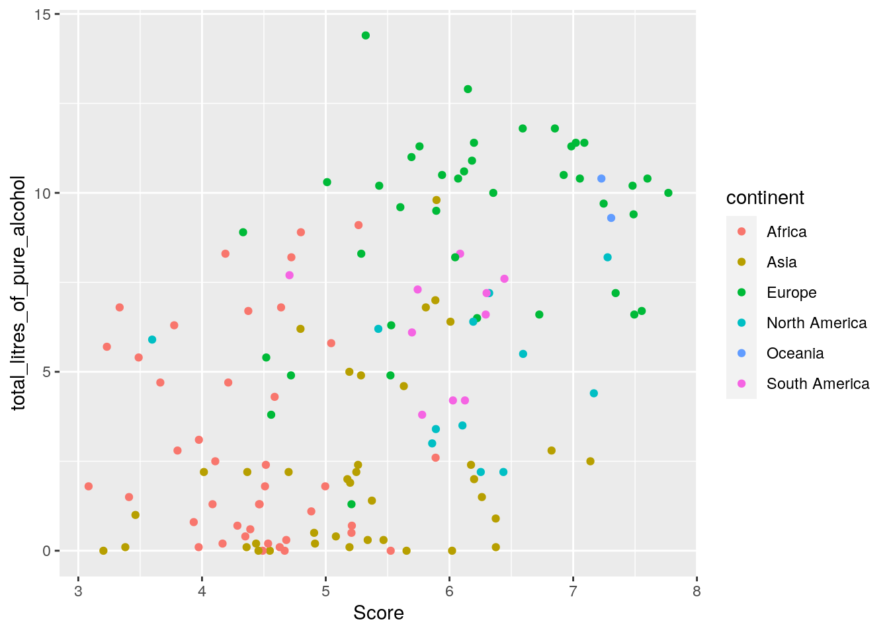
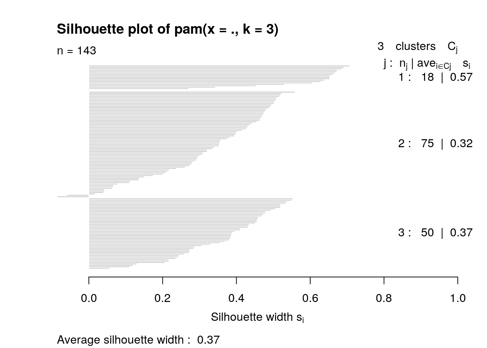

This analysis looks at the correlation between alcohol consumption and average measure of happiness per country and continent.
names(Happiness)[names(Happiness) == "Country or region"] <- "country"
Project1<-Happiness %>%inner_join (Drinks, by="country")For this an inner join was done, which means that rows were dropped from the dataset that were without a match corresponding to country. This means that no NAs are introduced into the new dataset, as all the unmatched rows are dropped. I chose this type of join in order to make analysis go more smoothly, but on the flip side this means that technically the results will not be as accurate as some countries may have been dropped.
r = getOption("repos")
r["CRAN"] = "http://cran.us.r-project.org"
options(repos = r)
Project1<-Project1%>% mutate(rate= Score/total_litres_of_pure_alcohol)
Project1%>% group_by(continent)%>% summarize (mean_score=mean(Score), sd_score=sd(Score))%>%arrange(desc(mean_score))## `summarise()` ungrouping output (override with `.groups` argument)## # A tibble: 6 x 3
## continent mean_score sd_score
## <chr> <dbl> <dbl>
## 1 Oceania 7.27 0.0559
## 2 Europe 6.22 0.955
## 3 North America 6.09 0.943
## 4 South America 5.92 0.496
## 5 Asia 5.25 0.909
## 6 Africa 4.38 0.620Project1%>% group_by(continent)%>% summarize (mean_alc=mean(total_litres_of_pure_alcohol), sd_alc= sd(total_litres_of_pure_alcohol))%>% arrange(desc(mean_alc))## `summarise()` ungrouping output (override with `.groups` argument)## # A tibble: 6 x 3
## continent mean_alc sd_alc
## <chr> <dbl> <dbl>
## 1 Oceania 9.85 0.778
## 2 Europe 9.17 2.69
## 3 South America 6.3 1.66
## 4 North America 4.84 2.00
## 5 Africa 2.97 2.87
## 6 Asia 2.17 2.46arrange(select(filter(Project1, continent=="Oceania"), country, Score, total_litres_of_pure_alcohol), desc(Score))## # A tibble: 2 x 3
## country Score total_litres_of_pure_alcohol
## <chr> <dbl> <dbl>
## 1 New Zealand 7.31 9.3
## 2 Australia 7.23 10.4arrange(select(filter(Project1, continent=="Africa"), country, Score, total_litres_of_pure_alcohol), desc(Score))## # A tibble: 41 x 3
## country Score total_litres_of_pure_alcohol
## <chr> <dbl> <dbl>
## 1 Mauritius 5.89 2.6
## 2 Libya 5.52 0
## 3 Nigeria 5.26 9.1
## 4 Algeria 5.21 0.7
## 5 Morocco 5.21 0.5
## 6 Cameroon 5.04 5.8
## 7 Ghana 5.00 1.8
## 8 Benin 4.88 1.1
## 9 Gabon 4.80 8.9
## 10 South Africa 4.72 8.2
## # … with 31 more rowsProject1 %>% group_by(continent) %>% summarize(count=n())%>% head(6)## `summarise()` ungrouping output (override with `.groups` argument)## # A tibble: 6 x 2
## continent count
## <chr> <int>
## 1 Africa 41
## 2 Asia 38
## 3 Europe 40
## 4 North America 12
## 5 Oceania 2
## 6 South America 10Short_P2<-Project1%>% select(country, Score, "Social support", "GDP per capita","Perceptions of corruption", total_litres_of_pure_alcohol, continent)
Short_P2%>% summarize_if(is.numeric,list(min=min, max=max, mean=mean, sd=sd, median=median),na.rm=T)## # A tibble: 1 x 25
## Score_min `Social support… `GDP per capita… `Perceptions of… total_litres_of…
## <dbl> <dbl> <dbl> <dbl> <dbl>
## 1 3.08 0 0 0 0
## # … with 20 more variables: Score_max <dbl>, `Social support_max` <dbl>, `GDP
## # per capita_max` <dbl>, `Perceptions of corruption_max` <dbl>,
## # total_litres_of_pure_alcohol_max <dbl>, Score_mean <dbl>, `Social
## # support_mean` <dbl>, `GDP per capita_mean` <dbl>, `Perceptions of
## # corruption_mean` <dbl>, total_litres_of_pure_alcohol_mean <dbl>,
## # Score_sd <dbl>, `Social support_sd` <dbl>, `GDP per capita_sd` <dbl>,
## # `Perceptions of corruption_sd` <dbl>,
## # total_litres_of_pure_alcohol_sd <dbl>, Score_median <dbl>, `Social
## # support_median` <dbl>, `GDP per capita_median` <dbl>, `Perceptions of
## # corruption_median` <dbl>, total_litres_of_pure_alcohol_median <dbl>cormat <- Short_P2 %>% select_if(is.numeric) %>% cor(use="pair")
tidycor <- cormat %>% as.data.frame %>% rownames_to_column("var1") %>%pivot_longer(-1,names_to="var2",values_to="correlation")
tidycor## # A tibble: 25 x 3
## var1 var2 correlation
## <chr> <chr> <dbl>
## 1 Score Score 1
## 2 Score Social support 0.774
## 3 Score GDP per capita 0.794
## 4 Score Perceptions of corruption 0.403
## 5 Score total_litres_of_pure_alcohol 0.501
## 6 Social support Score 0.774
## 7 Social support Social support 1
## 8 Social support GDP per capita 0.759
## 9 Social support Perceptions of corruption 0.189
## 10 Social support total_litres_of_pure_alcohol 0.531
## # … with 15 more rowsSum_Stat_Group<-Short_P2%>% group_by(continent)%>% summarize_if(is.numeric,list(min=min, max=max, mean=mean, sd=sd, median=median),na.rm=T)
install.packages("kableExtra")## Installing package into '/stor/home/aff395/R/x86_64-pc-linux-gnu-library/3.6'
## (as 'lib' is unspecified)library(kableExtra)##
## Attaching package: 'kableExtra'## The following object is masked from 'package:dplyr':
##
## group_rowskbl(Sum_Stat_Group)| continent | Score_min | Social support_min | GDP per capita_min | Perceptions of corruption_min | total_litres_of_pure_alcohol_min | Score_max | Social support_max | GDP per capita_max | Perceptions of corruption_max | total_litres_of_pure_alcohol_max | Score_mean | Social support_mean | GDP per capita_mean | Perceptions of corruption_mean | total_litres_of_pure_alcohol_mean | Score_sd | Social support_sd | GDP per capita_sd | Perceptions of corruption_sd | total_litres_of_pure_alcohol_sd | Score_median | Social support_median | GDP per capita_median | Perceptions of corruption_median | total_litres_of_pure_alcohol_median |
|---|---|---|---|---|---|---|---|---|---|---|---|---|---|---|---|---|---|---|---|---|---|---|---|---|---|
| Africa | 3.083 | 0.000 | 0.000 | 0.033 | 0.0 | 5.888 | 1.402 | 1.120 | 0.411 | 9.1 | 4.379171 | 0.9425366 | 0.5070488 | 0.0955366 | 2.965854 | 0.6204616 | 0.2767419 | 0.3199566 | 0.0689935 | 2.8704189 | 4.4610 | 0.9860 | 0.3930 | 0.0820 | 1.80 |
| Asia | 3.203 | 0.378 | 0.287 | 0.023 | 0.0 | 7.139 | 1.538 | 1.684 | 0.453 | 9.8 | 5.252684 | 1.2059211 | 0.9559211 | 0.1077632 | 2.173684 | 0.9092369 | 0.2656336 | 0.3557148 | 0.0783310 | 2.4638669 | 5.2540 | 1.2455 | 0.9485 | 0.0975 | 1.70 |
| Europe | 4.332 | 0.666 | 0.685 | 0.000 | 1.3 | 7.769 | 1.624 | 1.609 | 0.410 | 14.4 | 6.222150 | 1.4050500 | 1.2211250 | 0.1401750 | 9.172500 | 0.9546531 | 0.1990633 | 0.1973894 | 0.1291874 | 2.6925336 | 6.1655 | 1.4770 | 1.2520 | 0.0795 | 10.10 |
| North America | 3.597 | 0.688 | 0.323 | 0.016 | 2.2 | 7.278 | 1.505 | 1.365 | 0.308 | 8.2 | 6.093250 | 1.3189167 | 0.9123333 | 0.0950000 | 4.841667 | 0.9432353 | 0.2205590 | 0.2882500 | 0.0742061 | 2.0020255 | 6.2225 | 1.3630 | 0.9230 | 0.0780 | 4.95 |
| Oceania | 7.228 | 1.548 | 1.303 | 0.290 | 9.3 | 7.307 | 1.557 | 1.372 | 0.380 | 10.4 | 7.267500 | 1.5525000 | 1.3375000 | 0.3350000 | 9.850000 | 0.0558614 | 0.0063640 | 0.0487904 | 0.0636396 | 0.7778175 | 7.2675 | 1.5525 | 1.3375 | 0.3350 | 9.85 |
| South America | 4.707 | 1.209 | 0.776 | 0.027 | 3.8 | 6.444 | 1.475 | 1.159 | 0.150 | 8.3 | 5.920200 | 1.3812000 | 0.9827000 | 0.0681000 | 6.300000 | 0.4957214 | 0.0886639 | 0.1194962 | 0.0354572 | 1.6552945 | 6.0570 | 1.4185 | 0.9725 | 0.0600 | 6.90 |
kbl(Sum_Stat_Group) %>%kable_styling(bootstrap_options = c("striped", "hover"))| continent | Score_min | Social support_min | GDP per capita_min | Perceptions of corruption_min | total_litres_of_pure_alcohol_min | Score_max | Social support_max | GDP per capita_max | Perceptions of corruption_max | total_litres_of_pure_alcohol_max | Score_mean | Social support_mean | GDP per capita_mean | Perceptions of corruption_mean | total_litres_of_pure_alcohol_mean | Score_sd | Social support_sd | GDP per capita_sd | Perceptions of corruption_sd | total_litres_of_pure_alcohol_sd | Score_median | Social support_median | GDP per capita_median | Perceptions of corruption_median | total_litres_of_pure_alcohol_median |
|---|---|---|---|---|---|---|---|---|---|---|---|---|---|---|---|---|---|---|---|---|---|---|---|---|---|
| Africa | 3.083 | 0.000 | 0.000 | 0.033 | 0.0 | 5.888 | 1.402 | 1.120 | 0.411 | 9.1 | 4.379171 | 0.9425366 | 0.5070488 | 0.0955366 | 2.965854 | 0.6204616 | 0.2767419 | 0.3199566 | 0.0689935 | 2.8704189 | 4.4610 | 0.9860 | 0.3930 | 0.0820 | 1.80 |
| Asia | 3.203 | 0.378 | 0.287 | 0.023 | 0.0 | 7.139 | 1.538 | 1.684 | 0.453 | 9.8 | 5.252684 | 1.2059211 | 0.9559211 | 0.1077632 | 2.173684 | 0.9092369 | 0.2656336 | 0.3557148 | 0.0783310 | 2.4638669 | 5.2540 | 1.2455 | 0.9485 | 0.0975 | 1.70 |
| Europe | 4.332 | 0.666 | 0.685 | 0.000 | 1.3 | 7.769 | 1.624 | 1.609 | 0.410 | 14.4 | 6.222150 | 1.4050500 | 1.2211250 | 0.1401750 | 9.172500 | 0.9546531 | 0.1990633 | 0.1973894 | 0.1291874 | 2.6925336 | 6.1655 | 1.4770 | 1.2520 | 0.0795 | 10.10 |
| North America | 3.597 | 0.688 | 0.323 | 0.016 | 2.2 | 7.278 | 1.505 | 1.365 | 0.308 | 8.2 | 6.093250 | 1.3189167 | 0.9123333 | 0.0950000 | 4.841667 | 0.9432353 | 0.2205590 | 0.2882500 | 0.0742061 | 2.0020255 | 6.2225 | 1.3630 | 0.9230 | 0.0780 | 4.95 |
| Oceania | 7.228 | 1.548 | 1.303 | 0.290 | 9.3 | 7.307 | 1.557 | 1.372 | 0.380 | 10.4 | 7.267500 | 1.5525000 | 1.3375000 | 0.3350000 | 9.850000 | 0.0558614 | 0.0063640 | 0.0487904 | 0.0636396 | 0.7778175 | 7.2675 | 1.5525 | 1.3375 | 0.3350 | 9.85 |
| South America | 4.707 | 1.209 | 0.776 | 0.027 | 3.8 | 6.444 | 1.475 | 1.159 | 0.150 | 8.3 | 5.920200 | 1.3812000 | 0.9827000 | 0.0681000 | 6.300000 | 0.4957214 | 0.0886639 | 0.1194962 | 0.0354572 | 1.6552945 | 6.0570 | 1.4185 | 0.9725 | 0.0600 | 6.90 |
flipped<-t(Sum_Stat_Group)
kbl(flipped) %>%kable_styling(bootstrap_options = c("striped", "hover"))| continent | Africa | Asia | Europe | North America | Oceania | South America |
| Score_min | 3.083 | 3.203 | 4.332 | 3.597 | 7.228 | 4.707 |
| Social support_min | 0.000 | 0.378 | 0.666 | 0.688 | 1.548 | 1.209 |
| GDP per capita_min | 0.000 | 0.287 | 0.685 | 0.323 | 1.303 | 0.776 |
| Perceptions of corruption_min | 0.033 | 0.023 | 0.000 | 0.016 | 0.290 | 0.027 |
| total_litres_of_pure_alcohol_min | 0.0 | 0.0 | 1.3 | 2.2 | 9.3 | 3.8 |
| Score_max | 5.888 | 7.139 | 7.769 | 7.278 | 7.307 | 6.444 |
| Social support_max | 1.402 | 1.538 | 1.624 | 1.505 | 1.557 | 1.475 |
| GDP per capita_max | 1.120 | 1.684 | 1.609 | 1.365 | 1.372 | 1.159 |
| Perceptions of corruption_max | 0.411 | 0.453 | 0.410 | 0.308 | 0.380 | 0.150 |
| total_litres_of_pure_alcohol_max | 9.1 | 9.8 | 14.4 | 8.2 | 10.4 | 8.3 |
| Score_mean | 4.379171 | 5.252684 | 6.222150 | 6.093250 | 7.267500 | 5.920200 |
| Social support_mean | 0.9425366 | 1.2059211 | 1.4050500 | 1.3189167 | 1.5525000 | 1.3812000 |
| GDP per capita_mean | 0.5070488 | 0.9559211 | 1.2211250 | 0.9123333 | 1.3375000 | 0.9827000 |
| Perceptions of corruption_mean | 0.09553659 | 0.10776316 | 0.14017500 | 0.09500000 | 0.33500000 | 0.06810000 |
| total_litres_of_pure_alcohol_mean | 2.965854 | 2.173684 | 9.172500 | 4.841667 | 9.850000 | 6.300000 |
| Score_sd | 0.62046160 | 0.90923687 | 0.95465313 | 0.94323526 | 0.05586144 | 0.49572143 |
| Social support_sd | 0.276741856 | 0.265633601 | 0.199063313 | 0.220558983 | 0.006363961 | 0.088663910 |
| GDP per capita_sd | 0.31995656 | 0.35571484 | 0.19738940 | 0.28825000 | 0.04879037 | 0.11949621 |
| Perceptions of corruption_sd | 0.06899351 | 0.07833105 | 0.12918738 | 0.07420610 | 0.06363961 | 0.03545717 |
| total_litres_of_pure_alcohol_sd | 2.8704189 | 2.4638669 | 2.6925336 | 2.0020255 | 0.7778175 | 1.6552945 |
| Score_median | 4.4610 | 5.2540 | 6.1655 | 6.2225 | 7.2675 | 6.0570 |
| Social support_median | 0.9860 | 1.2455 | 1.4770 | 1.3630 | 1.5525 | 1.4185 |
| GDP per capita_median | 0.3930 | 0.9485 | 1.2520 | 0.9230 | 1.3375 | 0.9725 |
| Perceptions of corruption_median | 0.0820 | 0.0975 | 0.0795 | 0.0780 | 0.3350 | 0.0600 |
| total_litres_of_pure_alcohol_median | 1.80 | 1.70 | 10.10 | 4.95 | 9.85 | 6.90 |
** When doing the summary statistics, it was important for me to be looking at the summary statistics, especially for looking at alcohol consumption in comparison with overall happiness score. When looking at the different variables, I also thought it would be interesting to group them by continent in order to see the grouping better in terms of geographical location.I did not find it surprising that when looking at the data, it appeared that there was in fact a positive correlation when looking at total alcohol consumption and happiness score. The results ended up showing that the highest happiness score was for the continent Oceania, and the lowest was for Africa. These results also seemed to support my hypothesis about there being a positive correlation between happiness and alcohol, as Oceania came in with the highest mean for alcohol consumption, while Africa was second to last in front of Asia. This is also when I decided to use the function pivot_longer, as the dataset needed to be longer in order so that a better correlation trend could be seen. When pivot_longer was used, it made it so that instead of the data being more spread out, it is able to be seen in a more compact and convienient way for viewing. As my data was already fairly tidy at the start of the merging process, I decided that it would be more beneficial to use this function when doing summary statistics, as this is when the data was more spread out. **
Short_P2%>%select_if(is.numeric)%>%cor%>%as.data.frame%>%
rownames_to_column%>%pivot_longer(-1)%>%
ggplot(aes(rowname,name,fill=value))+geom_tile()+
geom_text(aes(label=round(value,2)))+
xlab("")+ylab("")+coord_fixed()+theme(axis.text.x = element_text(angle=90, hjust = 1))
ggplot(Short_P2, aes(Score,total_litres_of_pure_alcohol))+
geom_point(aes(color=continent))+ggtitle( "Alcohol Consumption versus Happiness Score")+ xlab("Happiness Score")+ylab("Total Liters of Alcohol")
ggplot(Sum_Stat_Group, aes(x=Score_mean, y=total_litres_of_pure_alcohol_mean, fill=continent))+
geom_bar(stat="summary",fun=mean)+scale_fill_brewer(palette="Accent")+ggtitle( "Average Alcohol Intake Comparison with Happiness Score")+ scale_x_discrete (name ="Score", breaks=seq(5,7.5,.5 ))+scale_y_discrete(name="Alcohol Consumption", breaks = seq(0, 10, 1))
The first plot shows the correlation that exhists between the different variables of the joined dataset, with the darker the color, the less they have in common. As seen from the graph, the is not a lot of correlation in perception of corruption and the other variables, while the score of happiness is higher with the more positively assiciated variables such as social support. GDP per capita also has a high correlation rate with over all happiness score, which makes sense as a generla trend is having money means that life can be more comfortable.
The second graph shows the correlation between happiness and alcohol for the various continents. This shows that there is a general trend with Europe and Oceania having more positive correlations associated with greater happiness and higher alcohol intake. On the flip side of the graph, Asia and Africa have a wide spread in terms of both the score and total liters consumed, which could be due to the fact that there is a greater level of diversity that occurs in these regions.
The final graph also shows more clearly that Oceania has the highest score and alcohol consumption level, which could also be due to the fact that only two countries were counted for the cluster. South Africa, Europe, and North America also have very similar scores in terms of Happiness, but differ a greater amount in the amount of aLcohol that is consumed. Lastly just like the previous graph, Africa comes in last with the lowest average happiness score, while Asia comes in last when looking at aLcohol consumption.
library(cluster)
library(GGally)## Registered S3 method overwritten by 'GGally':
## method from
## +.gg ggplot2cluster1<-Short_P2%>%select(-country, -continent)%>% scale%>% pam(3)
Short_P2%>% mutate(cluster=as.factor(cluster1$clustering))%>% ggpairs(columns= c("Score", "Social support", "GDP per capita", "Perceptions of corruption", "total_litres_of_pure_alcohol"), aes(color=cluster))
ggplot(Short_P2, aes(x=Score,y=total_litres_of_pure_alcohol, color=continent))+geom_point()
plot(cluster1,which=2)
** For this part of the analysis I used clustering in order to track goodness of fit in the dataset. This was done by using numeric variables and looking at their correlations with one another. These variables did not have a very strong correlation with one another as seen from the above graphs which show the trends that happen between variables. The spread is large and wide which causes the clusters and their summaries to be closer to .4 than 1 which would be a sign of obvious correlation. The greatest correlation found between variables was seen when looking at GDP per Capita and score, which is reasonable as money can have a direct and lasting impact on overall happiness in a person. The weakest correlation was found to be thoughts on corruption and alcohol consumption, which is somewhat surprising to me as I thought that they could have a positive trend due to intoxication causing people to do risky activities. **